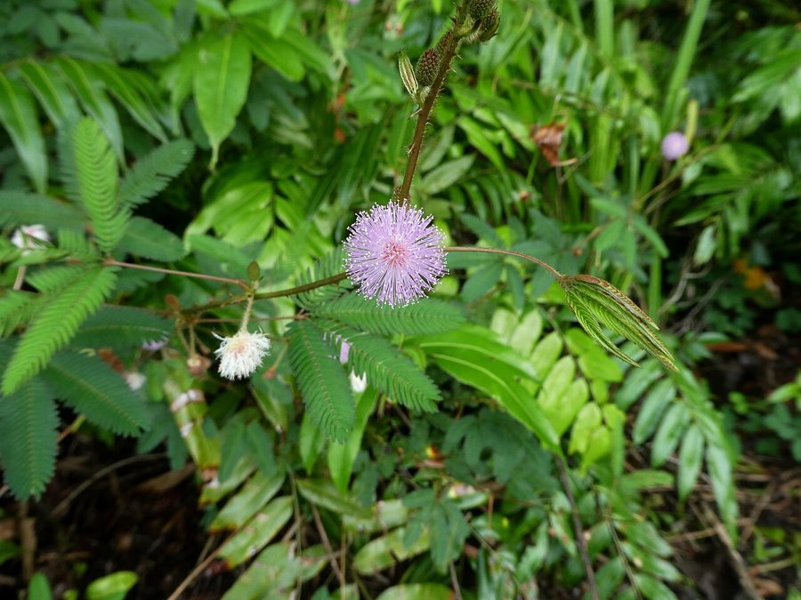

लाजवंतीTouch-me-not
Mimosa pudica · Fabaceae · FLR-0017

- Scientific name
- Mimosa pudica L.
- Family
- Fabaceae
- Hindi
- लाजवंती / छुई-मुई
- Status here
- invasive
- IUCN
- not evaluated
When to look कब देखें
Present all year.
लाजवंती / Touch-me-not
Mimosa pudica L. — Fabaceae
लाजवंती — पूर्वी यूपी का हर बच्चा लाजवंती के पास झुककर पत्ती दबाता है और देखता है कि पत्तियाँ कैसे बंद हो जाती हैं। यह पौधा छूने पर फौरन सिकुड़ता है और बीस मिनट में वापस खुल जाता है। यह सिर्फ़ खरपतवार नहीं — यह एक जीता-जागता विज्ञान का प्रयोग है।
हिंदी परिचय Hindi Overview
लाजवंती (Mimosa pudica) मूल रूप से मध्य और दक्षिण अमेरिका का पौधा है, लेकिन अब पूरे भारत में फैल चुका है। Fabaceae परिवार का — मटर, सेम, और बबूल का रिश्तेदार।
इसके सबसे असाधारण विशेषता है — Thigmonasty (स्पर्श-संवेदनशीलता)। जब पत्ती को छुआ जाता है:
- तत्काल: पत्रक (leaflets) अंदर की तरफ बंद होते हैं।
- एक सेकंड में: पूरी पत्ती (petiole) नीचे गिर जाती है।
- प्रभाव फैलता है: अगर जोर से छुआ जाए तो पड़ोसी पत्तियाँ भी बंद होने लगती हैं।
- 20 मिनट में: सब कुछ वापस खुल जाता है।
यह प्रतिक्रिया तंत्रिका तंत्र से नहीं होती — पौधे में दिमाग या नसें नहीं हैं। यह hydraulic (द्रव-दबाव) प्रणाली है: pulvini नामक विशेष कोशिकाएं पानी को बाहर निकालती हैं, जिससे पत्तियाँ ढीली होकर गिर जाती हैं।
2016 का महत्वपूर्ण अध्ययन: Monica Gagliano (Australia) ने दिखाया कि लाजवंती सीख सकता है — बार-बार हानिरहित झटका देने पर पौधा अंततः प्रतिक्रिया देना बंद कर देता है। यह habituation (अभ्यस्तता) — सीखने का सबसे सरल रूप — पौधे में पहली बार दिखाया गया।
Quick Identification शीघ्र पहचान
| Feature | Description |
|---|---|
| Height & Habit | Creeping, prostrate to semi-erect prickly subshrub, 30–80 cm tall; base woody |
| Leaves | Bipinnately compound with 1–2 pairs of pinnae; 10–25 pairs of leaflets per pinna |
| Thigmonasty | Rapid leaf-folding and drooping upon touch, vibration, or temperature change |
| Flowers | Round, fluffy, pink/mauve pompom-like heads, 1–2 cm in diameter |
| Fruit | Linear pods (1–3 cm long) in flat clusters of 3–8, margins covered in stiff bristles |
| Stems | Armed with sharp, recurved prickles (pointing backward); reddish-brown to green |
Field tip: Look for a low, creeping, thorny weed with feathery leaves that fold up instantly when touched, and small, round pink pompom flowers. Wild sensitive plant (Neptunia oleracea) is aquatic, has no thorns, and is not as sensitive.
Morphology आकृति विज्ञान
| Feature | Measurement |
|---|---|
| Plant height | 30–80 cm |
| Leaf length | 4–10 cm |
| Leaf width | 2–5 cm (pinnae length) |
| Flower diameter | 1–2 cm (round head) |
| Fruit / seed dimensions | 1–3 cm (pod length) |
Habit: Perennial subshrub; prostrate to semi-erect; stems 30–80 cm; woody at base; often rooting at nodes where they touch the ground. Stems green to reddish-brown; covered with soft hairs and recurved prickles.
Leaves: Stipulate; bipinnately compound. Each leaf has 1–2 pairs of pinnae; each pinna 2.5–5 cm long with 10–25 pairs of linear-oblong leaflets, 3–8 × 1–2 mm, sensitive and folding on touch. The petiole is also sensitive — the entire leaf collapses when the petiole is strongly stimulated.
Pulvini: The key structures responsible for thigmonasty. A pulvinus is a swollen area at the base of each leaflet and at the petiole-rachis junction, containing motor cells (large, water-filled cells). When stimulated, these cells rapidly lose water to surrounding tissue — turgor drops, and the structure collapses. Recovery happens as water is pumped back.
Flowers: Axillary heads; 1–2 cm diameter; pink to mauve; individually: 4 sepals, 4 petals, 4–8 stamens with prominent pink filaments. Multiple flowers per head, creating the pompom appearance.
Pod: Linear; 1–3 cm × 4 mm; in clusters of 3–8; margins prickly; constricted between seeds; breaks into 1-seeded segments when ripe (lomentum).
हिंदी: pulvini = विशेष कोशिकाएं — पानी छोड़कर गिरती हैं।
एक पत्ती में: 2 जोड़े pinnae × 25 जोड़े पत्रक = 100 पत्रक।
फली: 3–5 बीज, पकने पर अलग-अलग टूटती है।
The Science of Touch-Sensitivity स्पर्श-संवेदनशीलता का विज्ञान
How the movement happens:
- Touch receptor cells in the leaflet surface detect mechanical stimulation
- Action potential propagates along the leaf at ~1 cm/second
- Action potential reaches the pulvinus at the leaflet base
- Motor cells in the lower half of the pulvinus rapidly release K⁺ and Cl⁻ ions, causing water to follow by osmosis
- Lower motor cells lose turgor; the leaflet folds upward (the upper cells remain turgid)
- The signal continues to the petiole pulvinus — the whole leaf droops
- Recovery: over 15–25 minutes, ions are actively pumped back, restoring turgor
Why does it do this?
- Herbivore deterrence: A sudden movement startles small insects and caterpillars — they fall off or abandon feeding. The prickles are then exposed, and the plant looks smaller and less appetizing.
- Water conservation: In bright sun or heat, leaf closure reduces transpiration surface area by up to 40% — may protect against heat stress.
- Raindrop damage: Folding in heavy rain may protect delicate leaflets.
Plant learning (habituation): Gagliano et al. (2016) dropped mimosa plants repeatedly from a height — each drop caused leaf closure. After 60 drops, the plants stopped responding to the drops (having "learned" it was harmless) but still responded normally to a novel stimulus (light shaking). This response persisted for 28 days — longer than most animal short-term memory. This is contested but remains one of the most cited plant-behaviour papers.
हिंदी: Action potential → K⁺ आयन बाहर → पानी बाहर → ढीलापन → गिरना।
क्यों? कीड़े गिर जाते हैं; पानी बचता है।
2016 का प्रयोग: लाजवंती 60 झटकों के बाद "सीख" गई — प्रतिक्रिया बंद कर दी।
28 दिन तक याद रखा।
Ecological Impact पारिस्थितिकी
Nitrogen fixation: Like all Fabaceae, mimosa has root nodules containing Rhizobium bacteria that fix atmospheric nitrogen — converting N₂ gas to ammonia available to plants. This means mimosa actually improves soil nitrogen in the roadsides it colonizes — an ecological benefit despite its weed status.
Polline-carriers: The pink pompom flowers produce abundant pollen. Bees — particularly carpenter bees and smaller native bees — visit regularly. Not a significant nectar source; primarily pollen-providing.
Invasive behavior: Originally from tropical America; now naturalized across tropical and subtropical Asia, Africa, and Australia. In eastern UP, it is so thoroughly established that most people assume it is native. Its prickly stems and persistent nature make it hard to remove manually — once established on a roadside, it persists indefinitely.
हिंदी: जड़ों में Rhizobium — नाइट्रोजन स्थिरीकरण।
मधुमक्खियाँ पराग के लिए आती हैं।
मूल रूप से अमेरिका का — अब हर जगह।
काँटे + persistence = निकालना मुश्किल।
Life Cycle / Phenology जीवन चक्र
- Perennial in eastern UP — does not die back fully; woody base survives summer
- Peak growth: June–September (monsoon); rapid extension of new stems
- Flowering: June–September; can flower almost year-round in warm conditions
- Seed set: Pods mature August–November; break into segments; dispersed by water, adhering to fur, and gravity
- Germination: Year-round in moist conditions; seeds have a hard coat and can remain viable for years
हिंदी: बहुवर्षीय — पूरी तरह नहीं मरता।
जून–सितम्बर: तेज़ वृद्धि और फूल।
बीज: वर्षों तक मिट्टी में जीवित।
Agricultural / Human Relevance कृषि और मानव संबंध
Cultural significance: "लाजवंती" = the bashful/modest one. The name is deeply embedded in Hindi poetry and proverb — a woman who is लाजवंती (modest, shy) is considered virtuous. The plant's response to touch became a metaphor for modesty. "छुई-मुई" = "touch me not" — the playful childhood name. It appears in Bollywood songs, folk literature, and is universally known.
Weed management challenge: Its low-growing, prickly, mat-forming habit makes it a persistent weed on paddy field bunds and roadsides. Manual removal is uncomfortable (prickles). Chemical control works but degrades soil.
Soil improvement: In degraded roadsides and field margins, mimosa's nitrogen fixation and dense root mat can actually improve soil structure over time — there is interest in managed use as a ground cover in some erosion-prone areas.
Traditional medicine: Leaf paste used in folk medicine for skin itching; root used as mild diuretic. These uses are locally practiced in some Basti area villages.
हिंदी: "लाजवंती" — लज्जाशीलता का प्रतीक; कविता और गीतों में।
मेड़ पर उगे तो निकालना मुश्किल।
जड़ें नाइट्रोजन जोड़ती हैं — मिट्टी सुधार।
लोक चिकित्सा: खुजली में पत्ती।
Expected Locally स्थानीय रूप से अपेक्षित
Not a field record. Written from published accounts for eastern Uttar Pradesh. No confirmed local sighting yet — if you have seen it, that is what the atlas needs.
अभी तक स्थानीय पुष्टि नहीं। यह विवरण प्रकाशित स्रोतों से है, किसी अवलोकन से नहीं।
| Date | Location | Notes |
|---|---|---|
Distribution वितरण
Global range: Native to tropical Central and South America (Brazil); now widely naturalized and invasive throughout tropical and subtropical Asia, Africa, and the Pacific Islands.
In India: Found as a naturalized weed across almost all states and union territories, especially in warm, humid plains and lower hills.
In Uttar Pradesh: Common in central and eastern districts, particularly on damp soil, railway borders, canal banks, and village grazing lands.
In Basti district / eastern UP: Widespread in roadsides, orchards, and paddy field bunds; grows aggressively during the monsoon season.
Range notes: No significant range changes documented; its invasive range continues to expand locally on disturbed soils.
Research Questions शोध प्रश्न
Anyone can investigate these | कोई भी इन प्रश्नों की जाँच कर सकता है
- How fast does the touch-response travel along the plant? / स्पर्श का प्रभाव पौधे में कितनी तेज़ी से फैलता है? — Touch one leaflet and time how many seconds before the adjacent pinna folds, then the whole leaf drops. Measure the distance; calculate speed (cm/second). Compare multiple plants.
- Does the plant habituate (stop responding) to repeated touching? / बार-बार छूने पर क्या पौधा जवाब देना बंद करता है? — Touch the same leaf every 30 seconds for 20 minutes; does response weaken? After a 30-minute rest, does it respond normally again?
- How long does recovery take? / बंद होने के बाद पत्तियाँ कितने में खुलती हैं? — Time exactly from leaf closure to full reopening; repeat at different times of day. Does heat slow recovery?
- Do insects fall off when the leaves collapse? / पत्तियाँ बंद होने पर कीड़े गिर जाते हैं? — Observe a leaf with an insect on it; manually trigger collapse. What does the insect do?
- What is the density of mimosa along disturbed vs. undisturbed roadsides? / नई बनी बनाम पुरानी सड़क पर लाजवंती कितनी है? — Count plants per 10 m on recently widened and old established roadsides. Does disturbance help it?
Similar Species मिलती-जुलती प्रजातियाँ
| Species | How to tell apart | हिंदी |
|---|---|---|
| Mimosa hamata | Similar but erect (not creeping); pods with stronger spines; less touch-sensitive; rarer in eastern UP | खड़ा — कम संवेदनशील |
| Wild sensitive plant (Neptunia oleracea) | Aquatic/floating; similar leaf folding; no prickles; found in ponds and ditches | पानी में — काँटे नहीं |
| Partridge pea (Chamaecrista mimosoides) | Similar bipinnate leaves but NOT touch-sensitive; yellow flowers; no prickles | वैसी पत्तियाँ — पर नहीं सिकुड़ती |
Field rule: Low-growing, prickly, creeping plant + bipinnate feathery leaves that fold instantly on touch + pink pompom flowers = Mimosa pudica. The touch-sensitivity alone is diagnostic — nothing else in eastern UP common vegetation responds this way.
Taxonomy & Classification वर्गीकरण
Original description. Mimosa pudica was described by Carl Linnaeus in 1753 in Species Plantarum 2: 518. Type locality: Brazil. The genus name Mimosa comes from the Greek mimos (mimic), referring to the sensitivity of the leaves, and the species epithet pudica is Latin for bashful or shrinking.
Subspecies. Several varieties exist, with Mimosa pudica var. hispida being the most common naturalized form in northern India.
Family and order placement. Belongs to the order Fabales, family Fabaceae (legume family), subfamily Caesalpinioideae (formerly placed in Mimosoideae), tribe Mimoseae. Fabaceae is the third-largest plant family, containing about 750 genera and 19,000 species.
Phylogenetic notes. Mimosa is a massive, monophyletic genus of about 400 species, mostly native to the Neotropics. Molecular phylogenetics shows that touch-sensitivity has evolved as an anti-herbivore adaptation in several distinct clades within this genus.
IUCN status rationale. This species has not been formally assessed by the IUCN Red List. As a widespread and highly invasive weed, its global and regional populations are stable and expanding rapidly on disturbed soil.
Photo Gallery फोटो गैलरी
Note: Add field photos tomedia/species/lajwanti/
फोटो निर्देश: खुली पत्तियाँ (पहले), बंद पत्तियाँ (छूने के बाद — सबसे ज़रूरी!), गुलाबी फूल, फली, और तने के काँटे।
Photos needed आवश्यक फोटो
- [ ] Leaves open — normal state (खुली पत्तियाँ — सामान्य)
- [ ] Leaves folded — after touch (बंद पत्तियाँ — छूने के बाद)
- [ ] Pink flower close-up (गुलाबी फूल — close-up)
- [ ] Pod cluster (फलियों का गुच्छा)
- [ ] Stem prickles (तने के काँटे)
Atlas Connections संबंधित प्रजातियाँ
- Congress Grass — shares disturbed roadside habitat; both are invasive from the Americas (FLR-0001)
- Lantana — shares roadside disturbed niche; both invasive, both persistent (FLR-0007)
- Dhatura — shares roadside waste-ground habitat; both are weeds of disturbed soil in village margins (FLR-0015)
- Mound-building Termite — mimosa root nodule bacteria contribute nitrogen to soil; termites also modify soil chemistry in overlapping habitat (SFL-0001)
References संदर्भ
- Linnaeus, C. (1753). Species Plantarum, 2: 518. Laurentii Salvii, Holmiae.
- Gagliano, M., Renton, M., Depczynski, M. & Mancuso, S. (2014). Experience teaches plants to learn faster and forget slower in environments where it matters. Oecologia, 175(1): 63–72.
- Braam, J. (2004). In touch: plant responses to mechanical stimuli. New Phytologist, 165(2): 373–389.
- Botanical Survey of India — Flora of Uttar Pradesh.
- Hooker, J.D. (1879). Flora of British India, Vol. 2. L. Reeve & Co., London.
- GBIF Occurrence Data — Mimosa pudica, India (2026).
Source file: species/flora/weeds/lajwanti.md